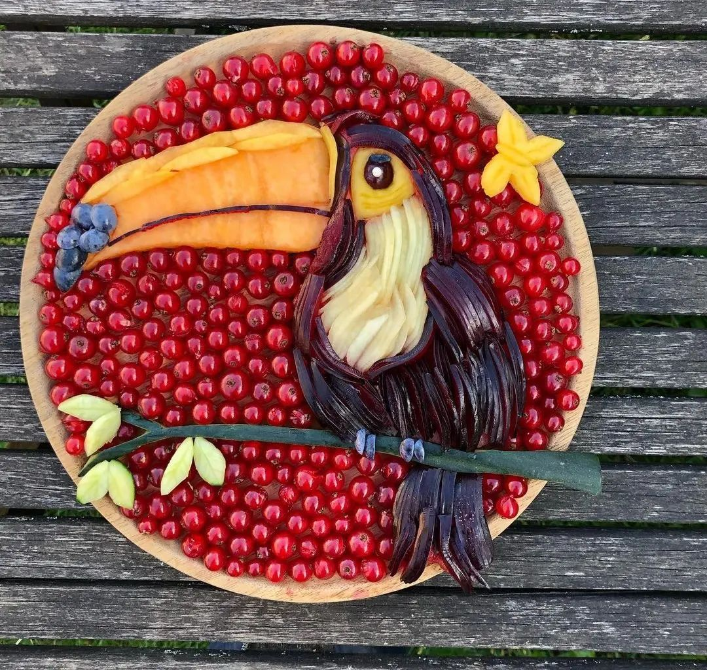
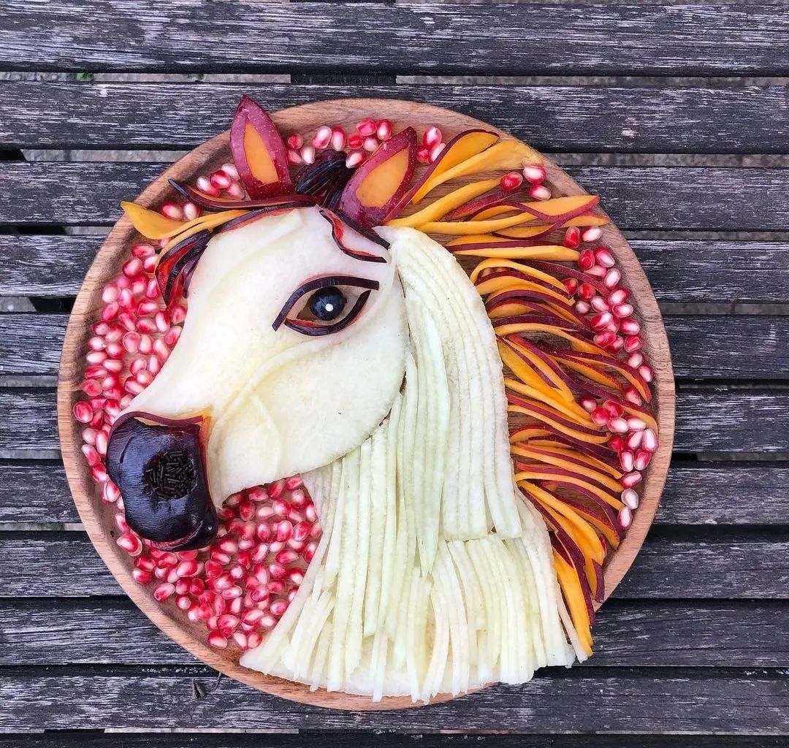
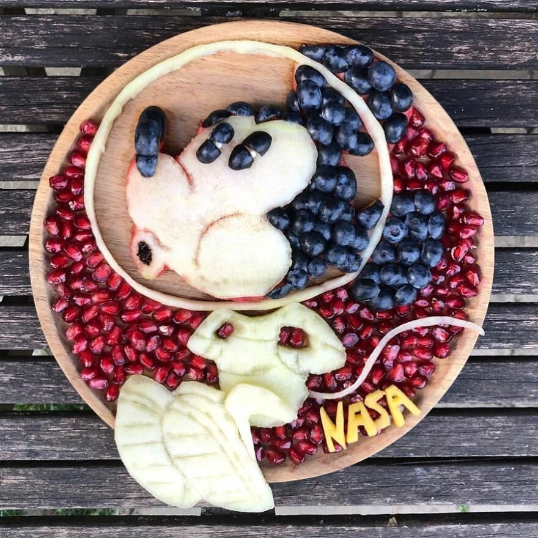

Farzandizgiz ovqatini oxirigacha yemaydimi yoki ovqatlanishdan bosh tortadimi? Unda bu tavsiyalar aynan siz uchun. Bugun biz bir onaning plastinkada qanday qilib mo''jizalar qilishini ko'rsatamiz va barchasi bolalari ko'proq meva va sabzavotlarni iste'mol qilishlari uchun.
Sara Lekrauvetning aytishicha, pazandachilik uning bolaligidan ishtiyoqi va hatto terapiyasi bo'lgan. Ovqat pishirayotganda, u dam oladi, kunning stressini engillashtiradi. Yillar davomida u tuzsiz, yog'siz va hech qanday ziravorlarsiz sog'lom ovqatlanishning muxlisiga aylandi, lekin uning yosh o'g'illari bunday taomni yoqtirmaydi. Ko'pgina bolalar singari, ular odatda sabzavot va hatto ko'pchilik mevalarni sevmaydilar.
Ularning dietasini diversifikatsiya qilish va ularni foydali va sog'lom oziq-ovqatga o'rgatish uchun Sara bir nuqtada ularga meva va sabzavotlarni rasm shaklida taqdim etishga qaror qildi. U hikoyalarni multfilmlardan, bolalar kitoblaridan, chiroyli fotosuratlardan va faqat boshidan oladi.
Multfilm qahramonlaridan tashqari, Sara ba'zan taniqli shaxslar - teleboshlovchilar, qo'shiqchilar, aktyorlar, olimlarning portretlarini yaratadi. U oshpaz Jeymi Oliverning meva va sabzavotlar ratsionini ko'paytirishni qo'llab-quvvatlovchi bayonotlarini eshitib, uning portretini yaratdi. Uning o'zi ham boshqa ota-onalar orasida bolalarning ratsionida meva va yangi sabzavotlarning ko'payishini targ'ib qiladi, buning uchun barcha usullar yaxshi, hatto oziq-ovqat bilan o'yinlar ham. Agar bola butun olma iste'mol qilishni istamasa, olmani yulduzlar shaklida taqdim eting - u albatta uni yeydi.